What God has done among our immigrant neighbors in Denver through Rooted with Roofs and your faithful partnership
December 2022 – November 2026
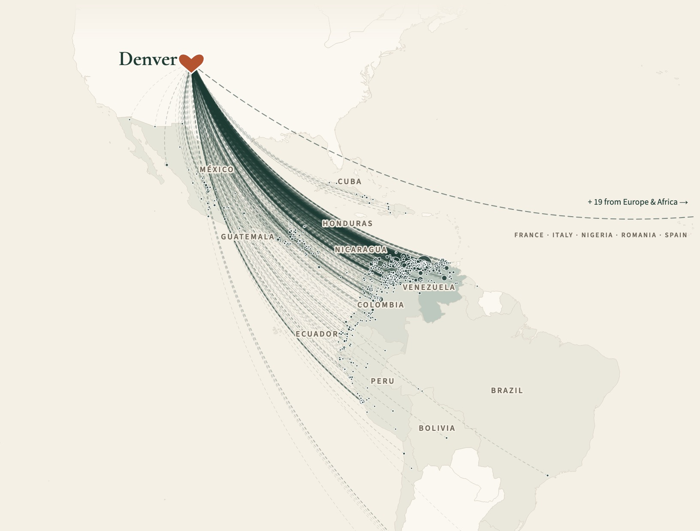
A letter to our partners
Dear FCCH Missions Committee,
Since 2008, First Congregational Church of Hamilton has sent us to Denver with your prayers and support, to minister among our immigrant neighbors. For eighteen years you have stood with us, and we are more grateful than we can say.
Four years ago, on December 4, 2022, 60 Venezuelan neighbors arrived at the doors of our church, Providence Bible Church, homeless and without work. None of us knew they were coming, but we said yes. Since then, about 25,000 immigrant neighbors from 635 hometowns in 24 countries have found their way to us, almost all by word of mouth. Together we have helped more than 700 people move into homes, helped file more than 10,000 work permit applications, and walked with more than 1,300 families through asylum.
This work is an extension of your ministry. When a mother in our living room holds her family's work permits, when a family is handed the keys to a new apartment, when we pray with a frightened family before court, FCCH is there too, nearly 2,000 miles from Hamilton. Your faithful support is part of what lets us give our days to these families.
It was a joy to worship with you in July 2025 and to share what God is doing here. This report looks back over the last four years and, more closely, over this past year. It is full of numbers, but every number is a person. And as the Lord opens new doors, including a growing vision for Venezuela, we are so glad to walk this road with you.
“I thank my God every time I remember you. In all my prayers for all of you, I always pray with joy because of your partnership in the gospel from the first day until now.”Philippians 1:3–5
With love and deep gratitude,
Juan and Courtney Peña
Your missionaries to Denver since 2008 · Co-founders of Providence Bible Church
December 2022 – November 2026
Four years at a glance
Each number below is a family, a story, a yes.
25,000
immigrant neighbors served
Almost all came because a friend or relative told them, “Go to Providence. They will help you.”
635
hometowns in 24 countries
Including every one of Venezuela's 23 states and its Capital District.
700+
people housed in 100+ apartments
Keys handed to families who had been without a home for more than a year.
10,000+
work permit applications
The right to work and provide for their families, prepared with them for free.
1,500
TPS applications
Protection from deportation, prepared at kitchen tables, apartment by apartment.
1,300+
families helped with asylum
Walked through USCIS and the immigration court, step by step.
Nearly $13 million
saved by families in filing fees and legal costs
Money that stayed in the pockets of families who needed it for rent, groceries and their children.
“Can we move this rock? If we can, we say yes.”
The question we ask every time a neighbor walks through our door.
Where our neighbors come from
Every corner of Venezuela
Most of the neighbors God has sent us are from Venezuela: 274 hometowns, from the biggest cities to small towns in Amazonas and Delta Amacuro, in every one of its 23 states and the Capital District. Colombia comes next, with 148 hometowns in 26 of its 32 departments, plus Bogotá. Families have also come from Peru, Mexico, Ecuador, Nicaragua, Honduras, Guatemala and beyond.
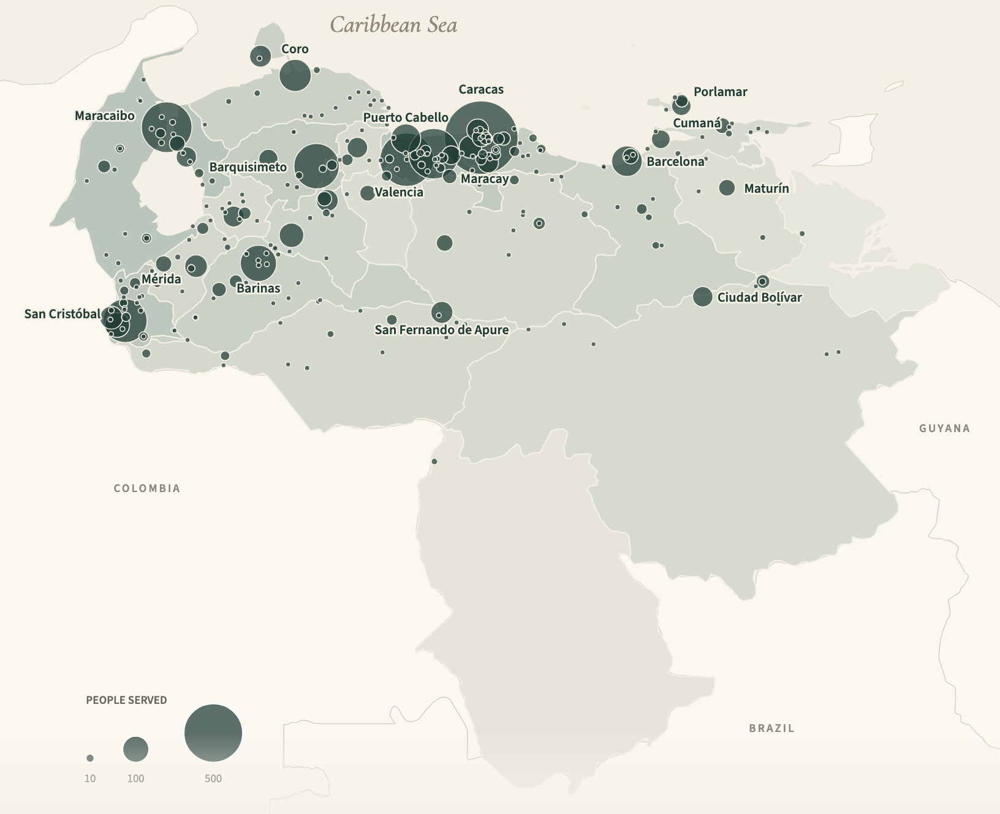
Each circle is a hometown; larger circles mean more people we have walked with from that place.
“The foreigner residing among you must be treated as your native-born. Love them as yourself, for you were foreigners in Egypt.”Leviticus 19:34
Our story
Three seasons of saying yes
Our logo is a roof over three stones. Each stone is one season of this ministry. In each one, we have tried to do the same thing: see what our neighbors need most, and love them there.
Roofs2022 – 2023
When those first 60 neighbors arrived, thousands more were filling Denver's shelters every week. So we focused on homes. We filled out apartment applications, covered security deposits, hauled furniture and stocked kitchens. It was exhausting, and it was pure joy: there is nothing like driving a family from a shelter, with everything they own in a bag, to an apartment with the beds made and food in the kitchen, and handing them the keys.
By the end of that season, more than 700 people had moved into more than 100 apartments across our city, and in every one of those homes, a friendship began.
Protection2023 – 2025
In the fall of 2023, we learned that many of the families we loved qualified for Temporary Protected Status, which protects people from deportation and opens the door to a work permit. But paralegals were charging about $2,000 a person, which is $6,000 for a single mom with two kids. So we taught ourselves how to help, built a simple mobile office, and went apartment by apartment. We helped 1,500 neighbors apply for TPS, for free.
In 2024 the work outgrew what any of us could do on the side. In a step of costly, expensive love, Juan left his role at CrossPurpose, a job he dearly loved, and our family chose to live on Courtney's salary so he could give himself fully to our immigrant neighbors. That same year we opened free legal clinics in our church building. From March through October we were open every day, and by the end of the year about 1,000 people a week were coming through our doors. Our promise never changed: no appointment, nobody turned away, and we'll be the last ones to leave the building.
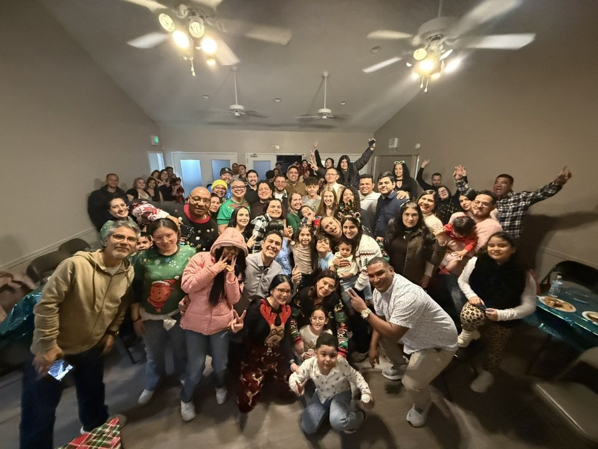
Our Christmas party with families we have walked with, many of whom first came through our clinics.
Presence2025 – today
In early 2025, everything changed. The CBP One parole program ended, and the work permits so many of our friends had worked hard for were no longer valid. Protections were taken away, enforcement grew, and fear settled over our community.
We didn't step back. We moved closer. The practical help never stopped: when CBP One ended, we learned asylum, and we have now walked with more than 1,300 families as they filed. But this season has a new weight. Our work moved into our home, and today more than 25,000 neighbors in our city have our address and know they can come without an appointment. Because the door is open, everything shows up in our living room: a mother whose husband was detained this morning, children who are scared, a family preparing for court tomorrow, a wife whose husband has been deported and who now needs to find a way home.
So we do both. We prepare the application and we sit with the mother who is afraid. We file the court motion and we pray with the family before the hearing. We can't fix most of what brings people to our door. Justice is slow, and the systems are bigger than we are. But we have learned this: if justice is slow, care must be immediate.
“I was a stranger and you invited me in.”Matthew 25:35
As your missionaries, we have always felt called to move toward the margins, where Jesus himself went. He was born without shelter, lived as a refugee in Egypt, and placed himself among the poor and the suffering. That is why we believe the Church does not come from the left or the right. It comes from the bottom, from the places where people are hurting most. Our calling in this season is simple: go where the fear is, keep moving every rock we can, and make sure no one faces injustice alone.
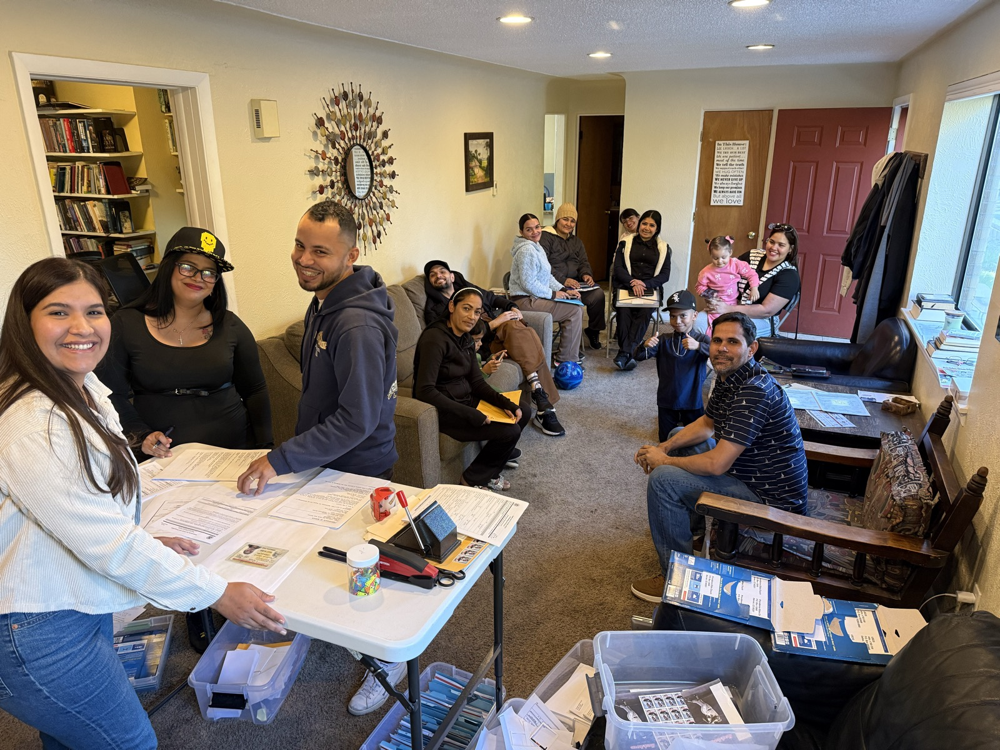
A weekday in our living room: families wait their turn while we prepare applications at the folding table.
December 2025 – November 2026
This past year
This year we completed 3,175 filings with and for our neighbors.
Annual asylum fee payments (EOIR)
1,331
Work permit applications
1,141
Changes of address
232
Asylum applications
205
Motions to move court to Denver
192
Court audio recording requests
74
Our weekly rhythm
When
Where
Who comes
Monday, half day
Bayaud city shelter
Families living in the shelter
Tuesday – Friday, 9 a.m. – 6 p.m.
The Peña home
40 – 60 neighbors a day, no appointment needed
Sunday, 2 – 6 p.m.
Providence Bible Church, after service
50 – 70 people, served entirely by 8 volunteers
Also this year
On most weeks, 3 to 5 families came to us because a loved one had been detained.
About 90% of the people we serve use Providence's mailing address so their USCIS and court mail is safe. We open each letter with the family and explain what it means.
We began serving on Mondays at a city shelter, first with the Salvation Army and then at Bayaud.
Families returning home, and parents of U.S.-citizen babies needing passports, found help every week.
An open door
What a normal week looks like
Families wait on our couches while we work through their cases. Little ones play at our feet. Work permits arrive at the church mailbox, and we get to hand them to families who can finally work legally. On Mondays, we bring the same care to families at the shelter.
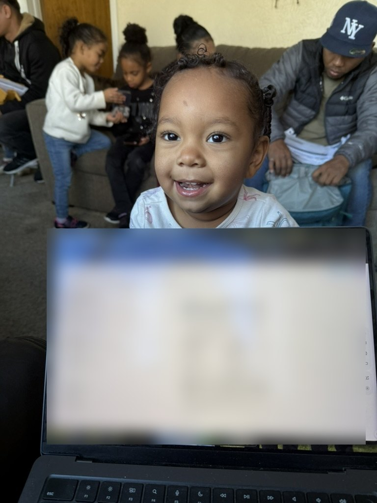
Peekaboo while we prepare a family's filing
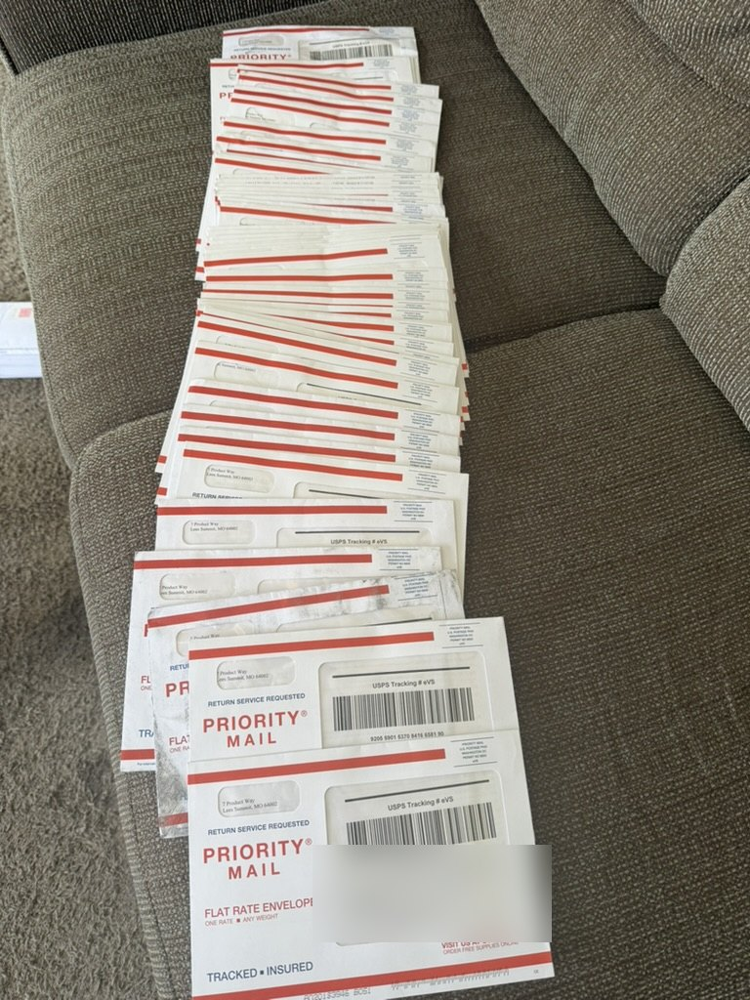
Work permits arriving at our church's address
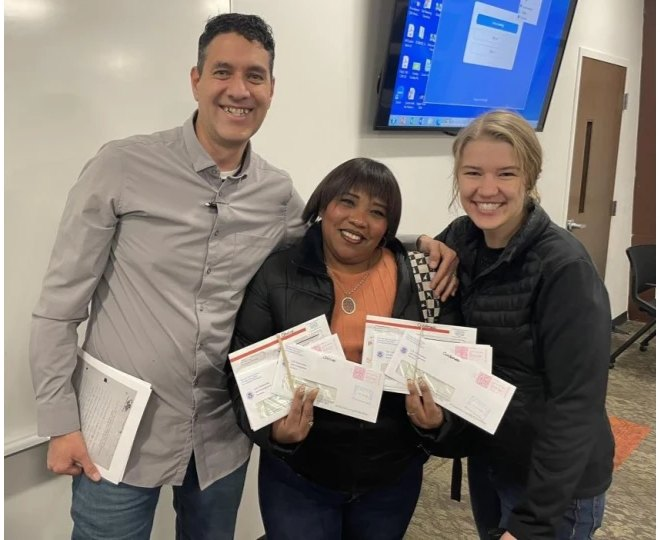
A mother celebrates her family's permits
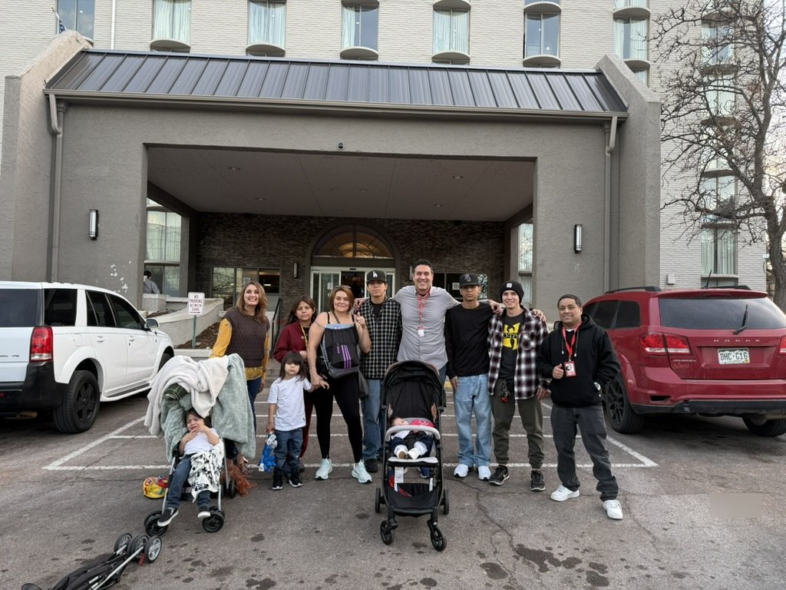
With families at the Bayaud city shelter
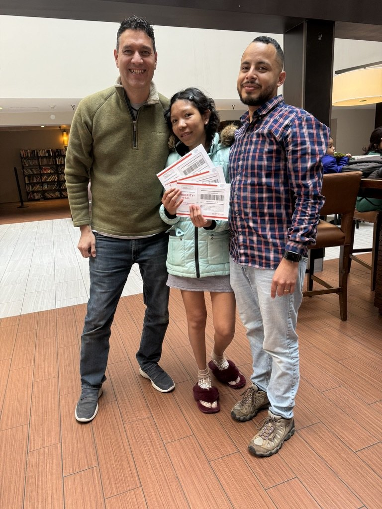
Work permits arrive at the shelter
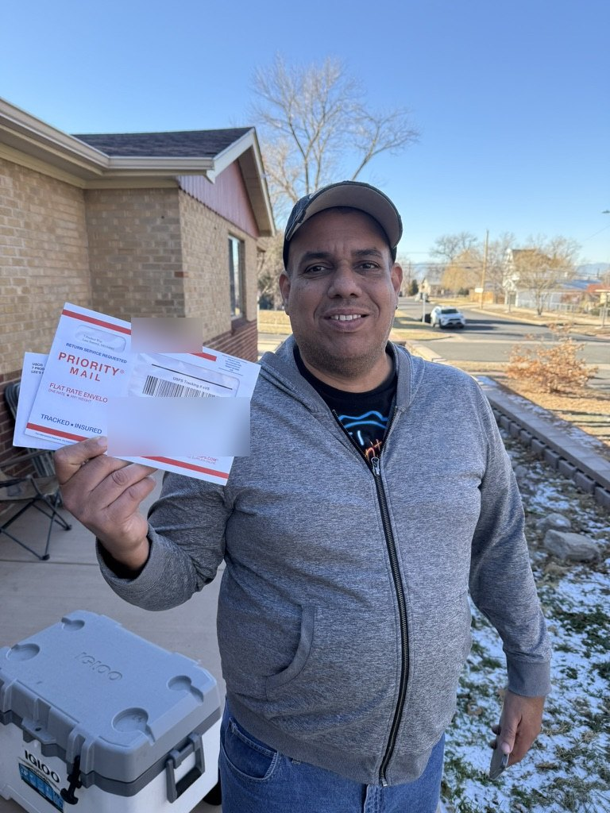
Another permit opened and explained
“Let us not become weary in doing good, for at the proper time we will reap a harvest if we do not give up.”Galatians 6:9
Walking with families in hard places
Detention, court and the road home
When a loved one is detained
Every week, families come to our door after a husband, father or son has been detained. We explain what is happening and what they can do next, sit with them in their grief, and connect them the same day with partner nonprofits and attorneys. And when someone comes home, we celebrate together on our patio.
Planning for the worst
We help parents make an emergency plan in case a mother or father is deported: who will care for the children, how the family will reunite, digital copies of important documents, and powers of attorney. This year, more than 60 families completed these plans.
Passports for U.S.-citizen babies
We help parents apply, take the photos, and prepare notarized consent when one parent has been deported.
Returning home with dignity
Every week, families come who are ready to go home, often because a husband has been deported. This year we helped more than 12 families reunite or return to Venezuela, Colombia and Peru. We help them get a salvoconducto (an emergency travel document), buy tickets and plan the trip.
For Venezuelan families, the trip runs by bus from Denver to Miami. Our volunteers along the route meet them with food at every transfer. In Miami, volunteers host them for a night and walk them all the way to the airport gate. We call it our Underground Railroad home.
Keeping court dates
A missed hearing means an automatic deportation order. So we help families move their cases to Denver, keep their addresses current, and prepare them before court. When an out-of-state court didn't answer, we helped families make emergency trips to Orlando, Chicago and Memphis so they would not be ordered deported.
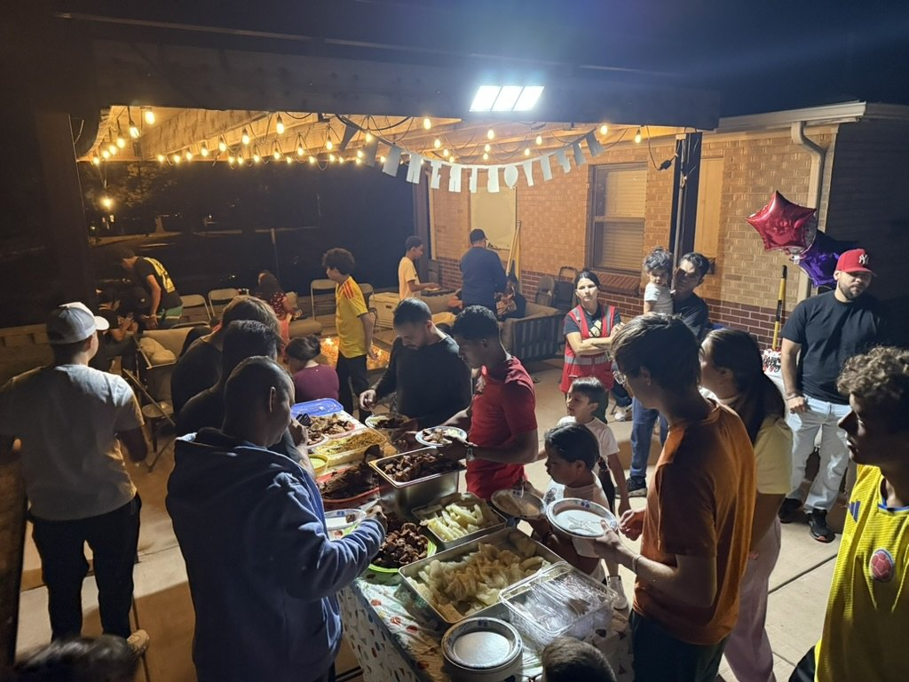
Neighbors and families share a meal on our patio to celebrate a release from detention.
More than a case
We do life together
Our legal work rests on friendships that last long after a case is filed. We go to birthday parties, quinceañeras and graduations. We cheer at soccer games and school events, visit friends in the hospital, and went camping together this summer. And when families lose a loved one to violence, we walk with them through the funeral and the grief that follows. These relationships are how we hear what families really need, and why they trust us with the hardest moments of their lives.
“Rejoice with those who rejoice; mourn with those who mourn.”Romans 12:15
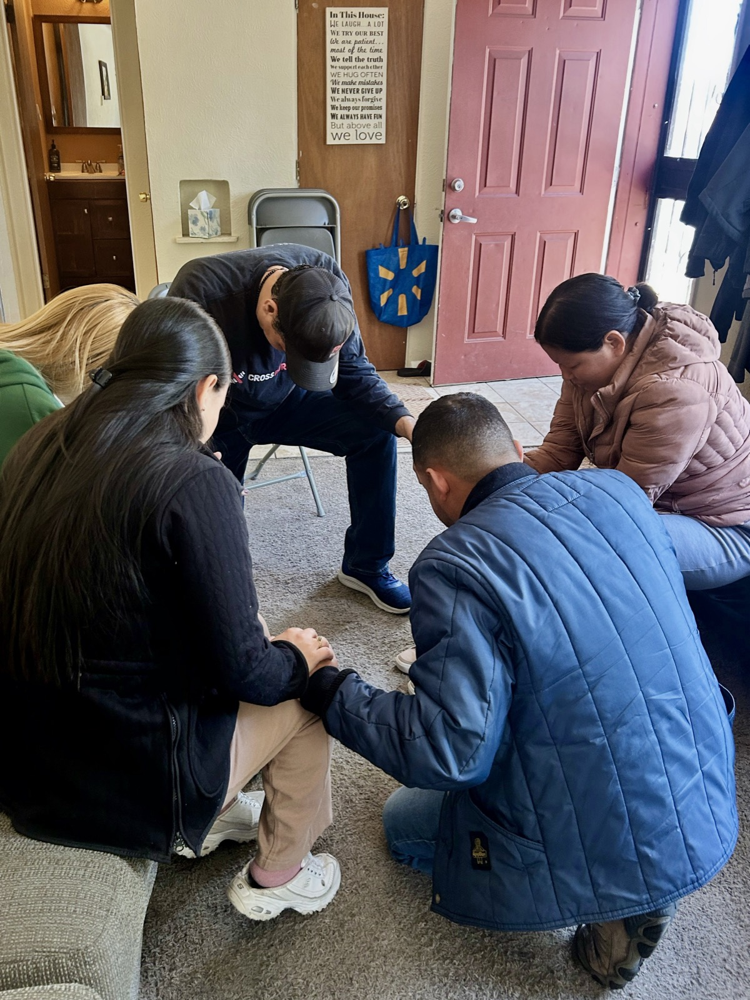
Praying with a family in our living roomAn elementary school graduation
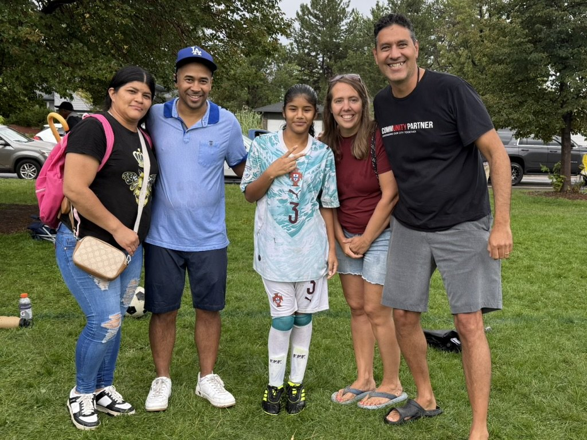
On the sidelines at a soccer game
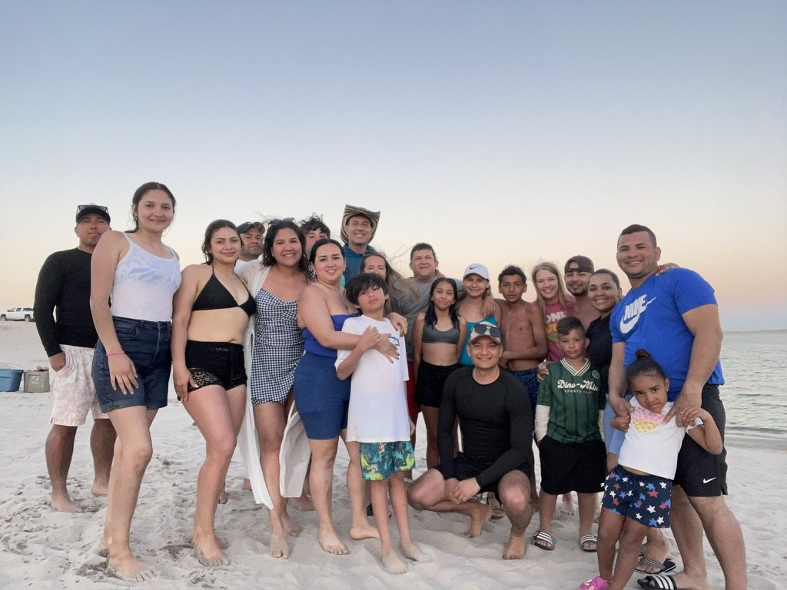
Our summer camping trip
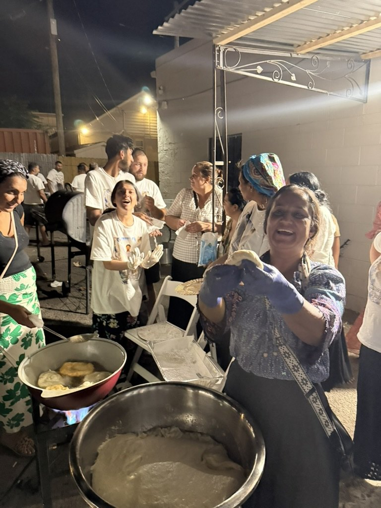
Cooking together after a funeral
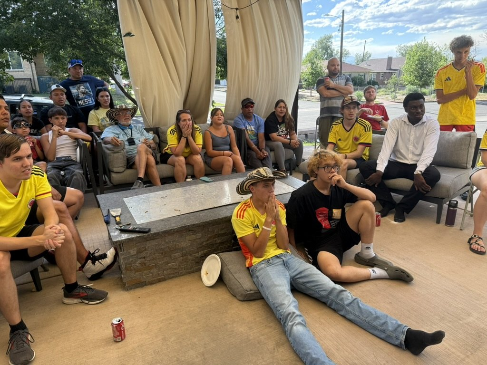
A soccer watch party on our patio
The body at work
Many hands, one body
This ministry has never been the work of one family. In Denver, it is carried by our church and by neighbors from churches across our city.
Our Sunday clinic
Every Sunday from 2 to 6 p.m., after service, the Providence building becomes a legal clinic. It is run entirely by volunteers, with no paid staff: eight people give four hours every week, serving 50 to 70 neighbors. Many of them are immigrants we once served, now serving others, just as someone once passed the love of Jesus on to us.
The Crazy Yes Group
More than 100 neighbors from our church and city receive a weekly email with the needs families share in our living room, and they say yes: groceries for a single mom between jobs, up to $1,500 raised so a family whose husband was deported could fly home, and donated cars so parents can get to work.
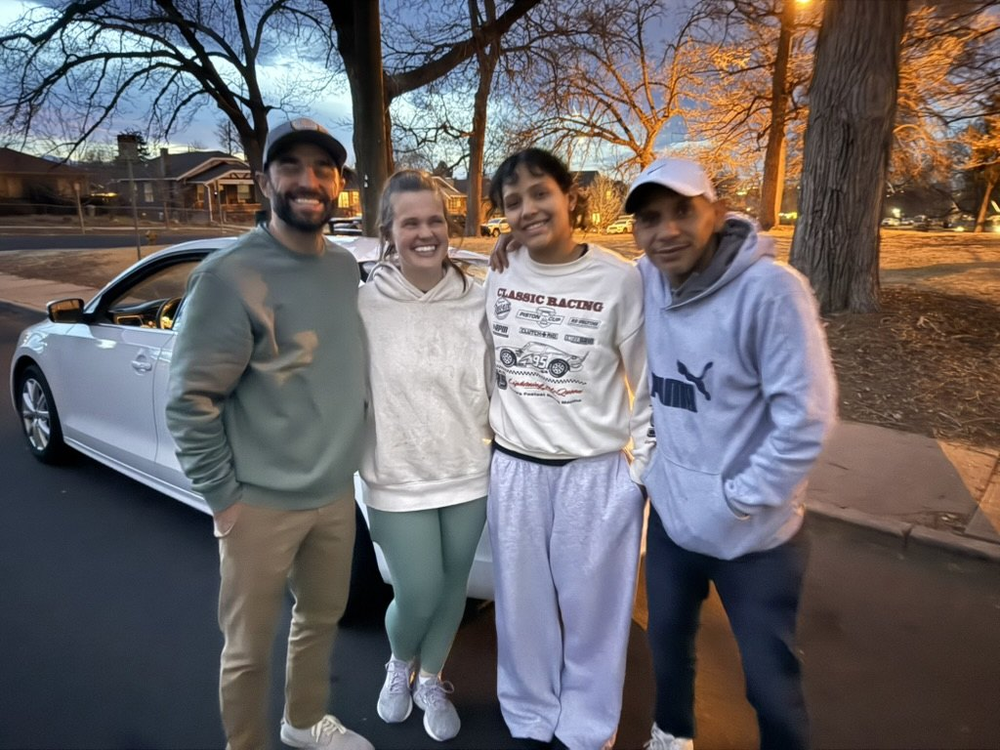
Crazy Yes Group members hand over a donated car to a family we serve.
Thank you, FCCH
What your partnership makes possible
Everything in this report rests on churches that have sent us and stayed with us. FCCH has been one of them since 2008.
Eighteen years of faithful support. Since 2008, your missions support has helped our family give our lives to ministry among immigrants in Denver, through every season.
Your prayers, which have carried us through the hardest days in our living room.
Your welcome. Worshiping with you in July 2025 and sharing about this work after the service was a highlight of our year.
How you can pray with us
For wisdom, protection and endurance as our home and church continue to be a place of shelter and refuge, where dozens of neighbors come for help on many days.
For families facing deportation and separation, especially children whose parents are detained or deported, that they would make wise plans, stay together when possible, and know the nearness of Christ in crisis.
For discernment as the vision for Venezuela takes shape.
We would be glad to record a video update for the congregation, to visit again, or to sit down with the Missions Committee to talk about this next season of ministry.
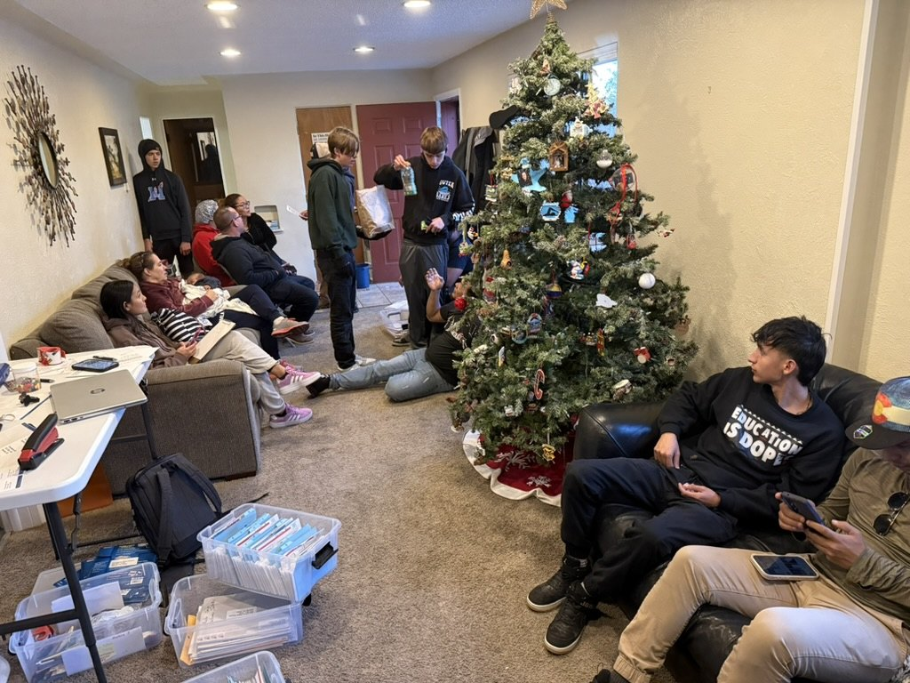
Christmastime in our living room, where families come for help every week.
Looking ahead
The road ahead
Many roads have brought our neighbors to Denver. We sense that God may be preparing some of them to carry the gospel back down those roads.
In Denver
The need has not slowed. Families still face work permit backlogs, out-of-state court dates, detention and painful decisions about going home. In 2027 we plan to keep our home and our church open as a place of shelter and refuge, helping with asylum, work permits, immigration court and urgent humanitarian needs. We also hope to add a part-time coordinator for the Crazy Yes Group, so more neighbors can say yes to more families.
A growing vision for Venezuela
We have walked with families from every state in Venezuela. Now we are praying about where God would have us establish a ministry base there. In the coming year, we hope to:
Visit Venezuela several times, including areas affected by this June's earthquakes, to look for a home for a long-term ministry base.
Develop a clear 10-year ministry plan to share with FCCH and our other partners: to plant a church, start a Christian school, open a clinic, and build a seminary or training center to serve as the headquarters for ministry in Venezuela.
Recruit and train a team of Venezuelan immigrants who want to return as missionaries to their own communities, neighborhoods and families.
Over the next 18 months, we hope to have a solid plan, a recruited team, theological and practical missionary training underway, and the beginning of a broader effort to invite churches into this work.
The Venezuelan hometowns of the families we have walked with. We are praying about where God would have us begin.
“Therefore go and make disciples of all nations.”Matthew 28:19
Your missionaries in Denver
Our missionary team
Serving our immigrant neighbors in Denver, with Providence Bible Church as our home church and First Congregational Church of Hamilton as our partners since 2008.
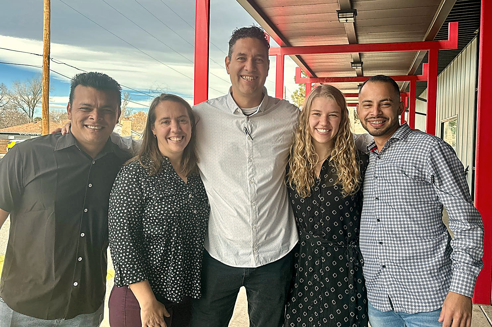
Juan · Courtney · Heidi · Yonny · Álvaro
Rooted with Roofs, a ministry of Providence Bible Church
“Here am I. Send me!”Isaiah 6:8
A ministry of Providence Bible Church · Denver, Colorado